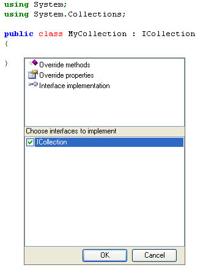
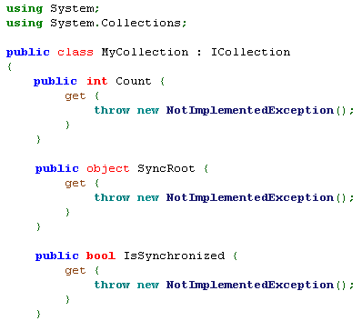
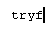
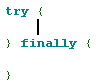
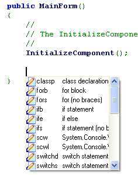
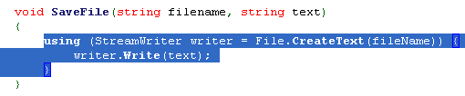
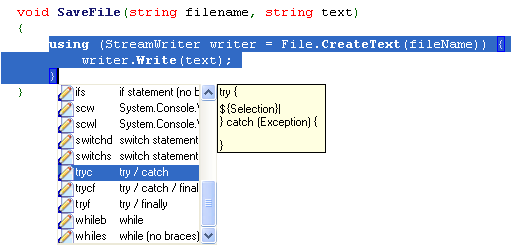
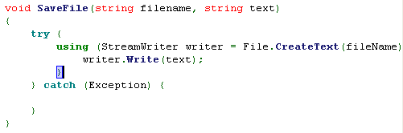

Given an interface that you want to implement, it can be a bit tedious to write all the class methods just to get your code to compile, especially if the interface has a large number of methods. SharpDevelop can save you time by generating code for you.
SharpDevelop can generate code for the following:
Whilst editing the code in the Text Editor select the Auto code generation from the Tools menu, or use the keyboard shortcut Alt+Insert.
This opens the Code Generation dialog box.

Use the cursor keys to select Interface implementations, press the Tab key to move to the list of interfaces, press the Space Bar to select the ICollection interface, then press the Enter key to generate the code.

SharpDevelop also has code templates that can be inserted into your code. To view the code templates, from the Tools menu select Options..., in the options dialog box expand the Coding category and select Code Templates.

SharpDevelop ships with several templates. These templates can be customised or you can create new custom ones.
To use a template in your source code, move the cursor to where you want the code to be inserted, then type in the template name, for example tryf, then press the space bar to insert the code.


Alternatively you can insert a code template using the code template dialog. Move the cursor to where you want the code to be inserted, then press Ctrl+J to open the Code Template dialog box.

The code template can be selected directly and inserted or, just as with code completion, you can type in the first few characters of the template name and press the Tab key or Enter key to insert the template.
The Code Template dialog box can also be used to surround selected code with a template. For example, if you wanted to put a try catch around some code, first select the code in the text editor.

Then press Ctrl+J to open the Code Template dialog box and then use the mouse or cursor keys to select the template.

Pressing the Enter or Tab key will insert the selected template.
